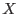

The data subspace stores in a FITSfile the filtering criteria used to select the data in that file. In our case what we are really talking about is storing in an event list file the selection criteria used to select the events in that file. This information will also be stored in data products produced from these event lists, but the DSS specification essentially refers back to the event list used to create the products, and it is probably easiest to think of it in terms of an event list.
We can think of each of the columns in an event list as an axes in a multi-dimensional data space. Thus each event (row) represents a point in this space. When you filter an event list, what you are doing is specifying one or more volumes in the data space into which data points must lie. This is the data subspace (DSS) for this filtered event list. So what one must specify in the data subspace is what axes (columns) are filtered on, and what restrictions were applied to each of those axes.
In the nomenclature used in the API, a data subspace is made of one or more components, each component specify a volume in data space. Each component is made up of one or more filters, each filter specifying a data axis, and the filtering criteria for this axis. Another way to think of this is that each filter represents a boolean expression for a particular value. Then a data component is a set of logically ANDed filters, and a data subspace is a set of logically ORed components. It is assumed that if a particular axis does not have a filter specified, then all values for that axis are allowed.
Several types of data filters are supported. The simplest is a range filter, which specifies a list of valid ranges for a data value. Bit mask filters are supported, which conceptually are just a special case of the range filter. The special case of GTI filters are also supported.
We also support two-dimensional filters, which specify a geometrical
region. In this case it is necessary to specify those data axes which
represent the  and  axes for the region. These axes are called the
components of the 2-d filter (note difference in usage of the word
component here versus above). The 2-d system itself is also considered
to be a DSS axis.
axes for the region. These axes are called the
components of the 2-d filter (note difference in usage of the word
component here versus above). The 2-d system itself is also considered
to be a DSS axis.
The most common use of 2-d filters is for coordinate systems (X-Y , DETX-DETY , etc). Special conventions are detailed in [1], whereby a certain 2-d axis name implies it has certain component names. For example, if the axis name is POS, then by convention it is a axis with components X and Y. I reproduce below the table from [1] detailing the conventions:
| Component names | Default composite name |
| X,Y | POS |
| *X,*Y | *, for all * |
| RA,DEC | EQPOS |
| GLON,GLAT | GALPOS |